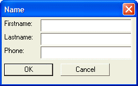

Using the KillFocus Event
The following script prompts the user for their name. It automatically capitalizes the first character of the name, and puts the rest of the name in lower case when the user exits from the control. It also formats the telephone number. When the user exits a control the killfocus event is generated. The event handling code for this script traps the killfocus event, and formats the text in the text box:
Result = ui_dlg_box("Name",<<%dlg% {region} Firstname:| [.30fname!fname_*]; Lastname:| [.30lname!lname_*]; Phone:| [.30phone!phone_*] {endregion}; {region} <*15&OK> <15&Cancel> {endregion}; %dlg%,<<%code% if a_dlg_button = "fname_killfocus" then a_dlg_button = "" fname = f_upper(fname) else if a_dlg_button = "lname_killfocus" then a_dlg_button = "" lname = f_upper(lname) else if a_dlg_button = "phone_killfocus" then a_dlg_button = "" phone2 = remspecial(phone) if lenphone2? = 10 then area_code = substr(phone2,1,3) prefix = substr(phone2,4,3) suffix = substr(phone2,7,4) phone = "("+area_code+") "+prefix+"-"+suffix else if lenphone2? = 7 then prefix = substr(phone2,1,3) suffix = substr(phone2,4,4) phone = prefix+"-"+suffix else 'it is not a phone number that we recognize, 'so, leave phone as is end if else if a_dlg_button = "&OK" .or. a_dlg_button = "&Cancel" then 'do nothing, dialog will close else 'the event has not been handled, so set a_dlg_button to "" to keep the dialog open a_dlg_button = "" end if %code%) |
The script produces this dialog box:

Lesson 6: Killfocus Event
Next
Events and Working with Arrays
Limitations
Desktop applications only